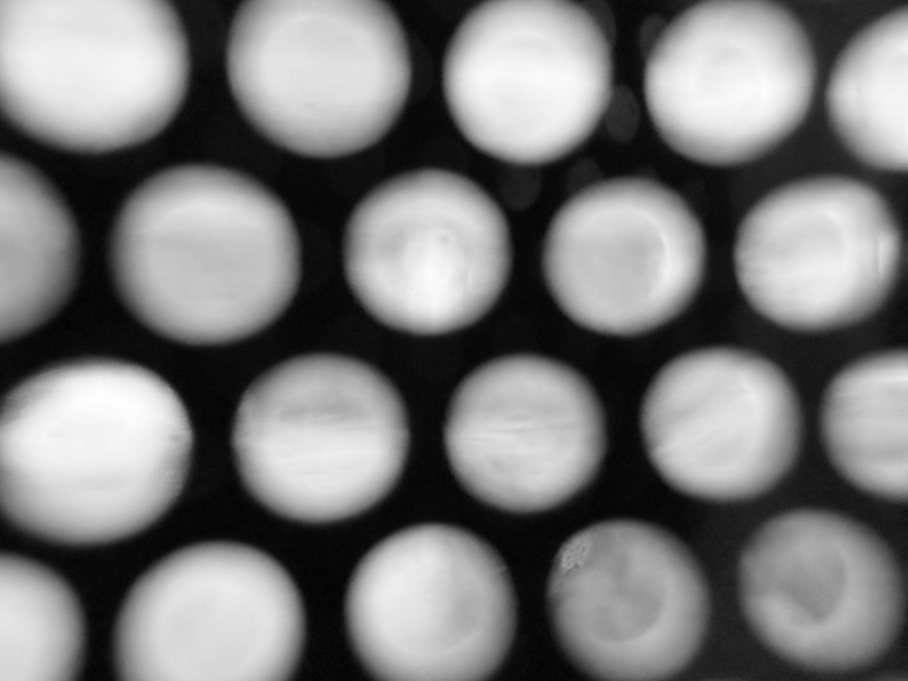

THE FORM OF EVERYTHING IS ALREADY PIXELATED. EVEN THE FONT!
The Becoming-Wall of a Transparent Display: Poche for Invisible Ornament
The glass wall of S. R. Crown Hall was closed in the last week of 2025. What was closed,
more precisely, was the glass door, not the wall. Yet in memory, the locked door camouflaged
itself as a wall. A wall is inherently closed: it separates an inside from an outside and frames a
gaze of a subject toward what lies on the opposite side. 1 It was too cold for me, as a lone subject
on the deserted IIT campus, to peer through the frozen glass wall of the Miesian building. I
boarded a bus back to the hotel earlier than I planned to. Inside the bus, it was warm. Outside,
darkness seemed to arrive unusually early. The sun sets earlier in Chicago than in Los Angeles, I
thought — until I realized this was only a thought. The darkness was caused by the bus wrap.
The bus wrapper had roughly fifty percent perforation, through which I watched the Chicago
Loop. The scenery appeared pixelated, half-open and half-closed by the image printed on the
window. A transparent display would look much like this: partially open to the world beyond,
partially obstructed by a digital image. Strictly speaking, what I was seeing through on the bus
was not a window but a glass wall. The camouflaged glass panel had no lever to open. There are
probably more walls than we recognize. A transparent display is one of them, insofar as it
remains closed, separates inside from outside, and frames the gaze toward the other side of the
screen.
The wall is one of the oldest architectural Gestell, an apparatus,2 and the transparent display
may be its most recent iteration. As a wall, a transparent display subverts three architectural
conventions: the order of solid and void, the logic of wall pocket, and the position of ornament.
The solid-void structure of a conventional pocket wall is visually reversed in a transparent
display. The pocket space of the screen device is not designed to conceal service mechanism but
to reveal what is being served by a digital apparatus. A digital image, positioned within this
pocket, exceeds the conventional status of ornament as formal excess and becomes essential.
The structure of solid and void in a transparent display resembles that of a pocket wall turned
inside out. A typical pocket wall consists of two layers of solid enclosing a void. Consider a
wooden frame wall made of two drywalls and an empty cavity between them. If this wall were
conceptually dissected along the centerline of the cavity and each side turned inside out, the
visual structure of a transparent display would emerge: two layers of void and a solid core
between them. Two further transformations are required. First, the visual voids must acquire
physical solidity. If successful, they become glass or transparent polyethylene terephthalate
(PET) panels — materials that are physically solid yet visually voided. Second, physical solidity
must be withdrawn from the drywall at the center. This step is decisive. It is the process of
becoming-image of the drywall.3 To remove solidity from drywall is not to remove its image but
to strip away its material attributes — tactility, scent, weight — leaving only its visual trace. Its
material presence is abstracted into numerical RGB data, translated into electrical signals, and
rendered as LED light. The result is a transparent display wall composed visually of two voids
and a single solid, and its physical pocket once occupied by drywall is now empty.
The pocket of a transparent display reveals rather than conceals. While it contains physical
components — electrical circuits and LED pixels — these elements are either transparent or too
small to be perceived. The hardware disappears without 4 being hidden. This produces a split
between physical presence and visual appearance. Electrical components exist materially within
the pocket, yet what appears is only the image of drywall. This image is non-functional and
aesthetic, similar to the perforated bus wrap, but opposed to the mechanical, electrical, and
plumbing systems traditionally concealed within walls. From this perspective, the digital image
may appear ornamental: a removable, superfluous excess. For instance, Michael Young describes
the Glass Farm (2013) by MVRDV as experimenting with digital screen and the digital image
printed on the glass façade of the building as ornamental.5 Yet the glass panel with a digital
image printed on it should not be mistaken as digital screen to avoid misconception.
The image on a transparent display cannot fully defined within the dichotomy of ornament/
non-ornament. It is simultaneously ornamental and non-ornamental. The digital image is integral
to the wall itself: the pixel lights are fused into the surface and cannot be detached without
destroying the whole. Vittorio di Palma defined the exterior of the Eberswalde Library (1999) in
a similar way: photographic images were etched onto the glass of the building's exterior, which
thus cannot be separated from the wall, as a challenge to Adolf Loos's definition of ornament as
something accessory and applied. If this challenge 6 was through a negative process of etching,
the transparent display challenges the concept of ornament through a digital process.
Whatever the image depicts — drywall, brick, stone — it is the informational content that
defines the transparent display as such. The screen differs from other walls in its capacity to be
simultaneously open and closed. When active, the digital image overlays the dim image of the
world beyond, producing an ambiguity that invites a cognitive choice: is this wall open or
closed? Without the image, the transparent display would be indistinguishable from a glass wall.
The image is therefore neither accessory nor structure. It resists classification as ornament, yet it
cannot be structural or functional. The quasi-solidity of the image nevertheless leaves a trace of
ornamentality.
The ambiguity extends beyond the image to the transparent display as a whole. If the image
were an ornament, the hardware integrated into the display would also be ornamental, for two
reasons. First, LED units and circuits are architectural excess. Second, they are indispensable to
the production of the image. The irony lies in their invisibility. Integrated at a microscopic scale,
the hardware becomes an invisible ornament. An ornament designed purely for visual effect
disappears, forfeiting its reason for being.
Kieran Timberlake's Cellophane House (2008) experimented with the architectural potential
of digital display-integrated walls. Yet its emphasis lay in the creation of lightweight
construction, energy generation, and the replacement of conventional climate systems rather than
in the creation of a digital wall. Due to technological limitations, the project relied on pre-
printed panels rather than OLED displays. The resulting prototype envelope, branded
SmartWrapTM simulated a transparent display through static imagery. Both its name and its
method recall the bus wrap advertisement. Without a conceptual rethinking of the transparent
display as architectural wall, such technologies risk remaining no more than digitized advertising
skins — or, at best, decorated extentions of the Miesian glass façade frozen in history.
As demonstrated here, the transparent display cannot be adequately defined by existing
architectural frames. Its structure of solid and void contains an internal contradiction between
physical presence and visual appearance. Its pocket space reverses the logic of concealment and
revelation. The ambiguity produced by digital imagery and invisible hardware negates the
conventional definition of ornament. One way to situate the transparent display within
architectural continuity is through Hegel's concept of Becoming: the unity of Being and Nothing.
Pure Being and pure Nothing negate one another and are preserved as moments within a higher
unity. Translated architecturally, if the opaque wall corresponds to Being and the transparent
wall to Nothing, the transparent display may be understood as Becoming. Its digitized opacity
and LED-integrated transparency are preserved as moments within a new wall condition. The
transparent display is not yet fully a wall — but it is in the process of becoming one.
Bibliography
Di Palma, Vittoria. "Blurs, Blots and Clouds: Architecture and the Dissolution of the Surface."
AA Files, no. 54 (2006): 24–35. http://www.jstor.org/stable/29544632.
Groys, Boris. "Curating in the Post-Internet Age." e-flux Journal, issue #94 (October 2018): 70–
76. https://www.e-flux.com/journal/94.
Han, Byung-Chul, and Daniel Steuer. Non-things: Upheaval in the lifeworld. Cambridge, UK:
Polity, 2023.
Hegel, Georg Wilhelm Friedrich. Georg Wilhelm Friedrich Hegel: The Science of Logic. Edited
by George Di Giovanni. of Cambridge Hegel Translations. Cambridge: Cambridge University
Press, 2010.
May, John. "Everything Is Already an Image." Log, no. 40 (2017): 9–26. http://www.jstor.org/
stable/26323867.
Timberlake, James, Stephen Kieran and Karl Wallick. Kieran Timberlake: Inquiry. New York:
Rizzoli, 2011.
Young, Michael. Reality Modeled After Images: Architecture and Aesthetics after the Digital
Image. New York: Routledge, 2022.
2026 MUGENE FONT FAMILY. ALL RIGHTS RESERVED.